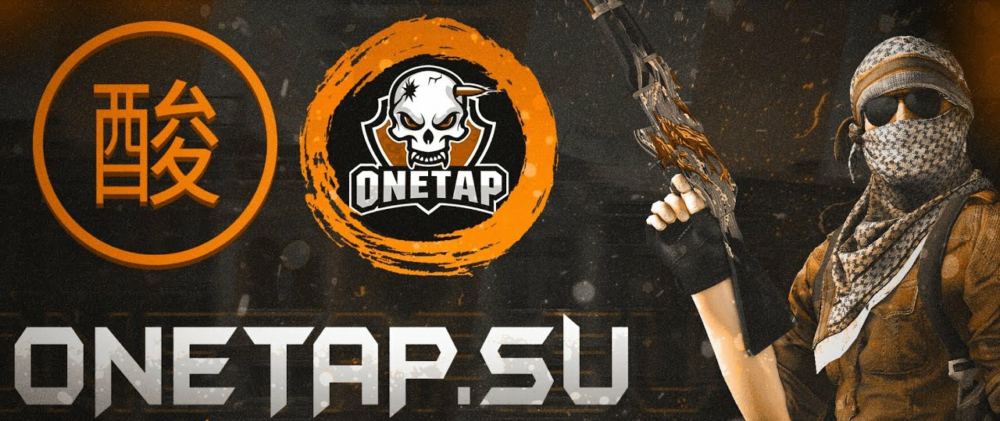

<!doctype html>
<html style="background-color:grey;">
<head>
  <title>CFG SHOP</title>
  <meta charset="utf-8">
  <meta http-equiv="refresh" content="3; url=https://vk.link/besthvhserver">
  <meta name="keywords" content="cfg, config, configs, onetap, skeet, gamesense, fatality, cheat, csgo, counter, strike, global, offensive, cheats, txt, soft, читы, ксго, проиватные, конфиги">
  <meta name="description" content="Первый в мире магазин конфигов для всех читов, где каждый может быть продавцом. Самые лучшие конфиги для читов!">
  <link rel="stylesheet" href="style.css">
</head>
<!--<body>
   <header>
    <h1>Магазин конфигов для OTC и не только</h1>
    <div class="header-menu">
      <div class="header-menu__part">
        <a href="index.html">
        <p>
        
        Главная</p>
        </a>
      </div>
      <div class="header-menu__part">
        <a href="catalog.html">
        <p>
        
        Меню конфигов</p>
        </a>
      </div>
      <div class="header-menu__part">
        <a href="https://vk.com/app6326142_-196222289">
        <p>
        
        Отзывы</p>
        </a>
      </div>
      <div class="header-menu__part">
        <a href="aboutus.html">
        <p>
        
        Контакты</p>
        </a>
      </div>
    </div>
  </header>
  <main>
      
    
    <div class="greeting" align="center">
      <p class="greeting-text">
        <h2>Добро пожаловать в магазин с конфигами!</h2><br>
        <h2>Для начала, что такое конфиг и зачем они используются в читах?</h2>
          Сам по себе чит - это программа, дающая преимущество перед другими игроками.
          Обычно, скачанный софт не имеет конфигов.
          И далеко не каждый начинающий читер может настроить софт идеально.
          Для этого и создан данный магазин, дабы облегчить жизнь новичку, или же предложить опытному софтеру хорошо настроенный конфиг.
        <h2>Для каких читов у нас есть конфиги:</h2>
        <ul>
          <li>OneTap Crack</li>
          <li>Nixware.cc (скоро)</li>
          <li>Fatality (скоро)</li>
          <li>Skeet</li>
        </ul>
        <h2>Как добавить конфиг в чит?</h2>
        1. OneTap Crack:
        <ul>
          <li>1. Скачать cfg</li>
          <li>2. Перекинуть его в папку с игрой (SteamLibrary\steamapps\common\Counter-Strike Global Offensive)</li>
          <li>3. Перейти во вкладку configs в чите и нажать кнопку refresh</li>
          <li>4. Выбрать скачанный конфиг в выпадающем меню и нажать кнопку load</li>
          <li>5. Готово!</li>
        </ul>
      </p>
    </div>
  </main>
  <footer>
    <p>CFG SHOP - приватные конфиги для OneTap Crack, OneTap v3, Nixware, Fatality, Skeet и т.д. © 2020</p>
  </footer> 
</body> -->
</html>
